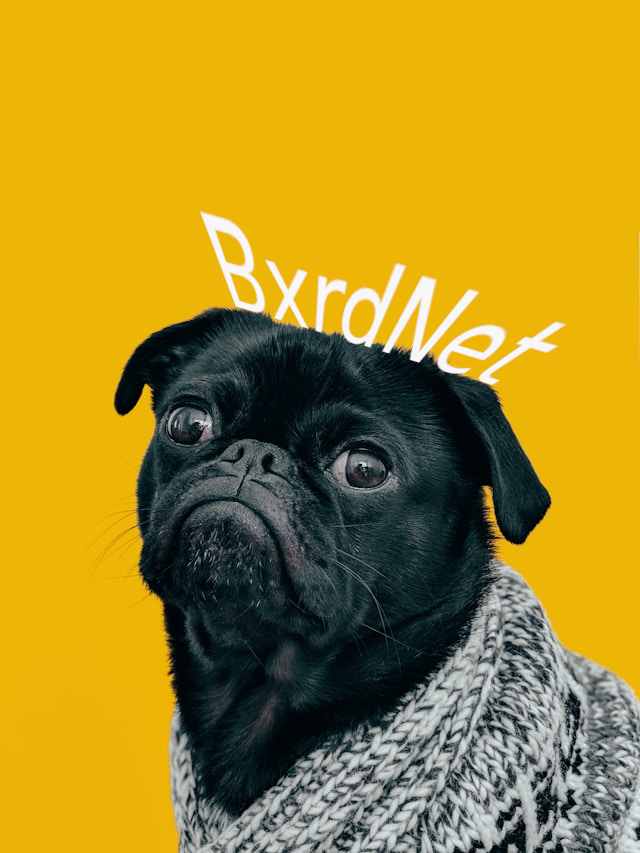

About
My name is Tyler, but you may know me as Bxrd. I dropped out of college during the COVID epidemic, where I initially studied Electronic Engineering. However, after completing a coding project at the end of my first year, I discovered my passion for Software Development and switched my major. I spent a year studying Software Development before COVID hit, and since then, I've been laying low. However, my love for programming has continued to burn. BxrdNet, formerly known as "GlobeGnome," has been in development since my college days. Now, I'm ready to lift BxrdNet off the ground and bring innovation and clarity to my websites. I believe in the power of collaboration with other developers and helping individuals in their own journey. BxrdNet is an interactive, open-minded, free speech-first platform that aims to empower and inspire.
